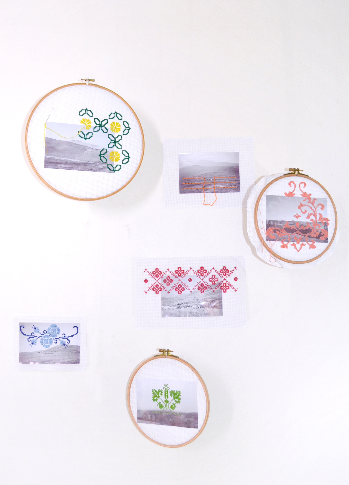
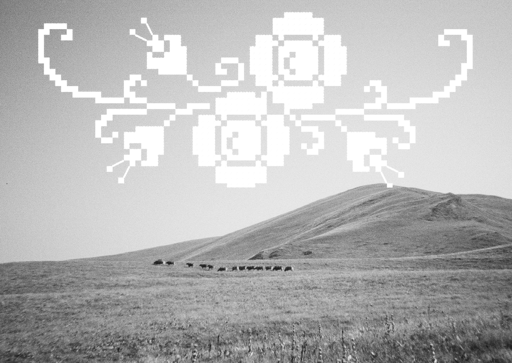

Combination
Passing on photographic archives
This association of two ancient techniques, film photography and cross-stitch, aims to rethink the way we value and transmit photographic archives in the digital age.